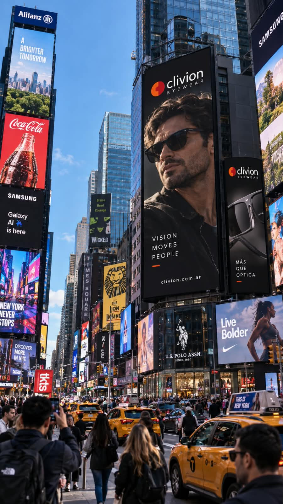
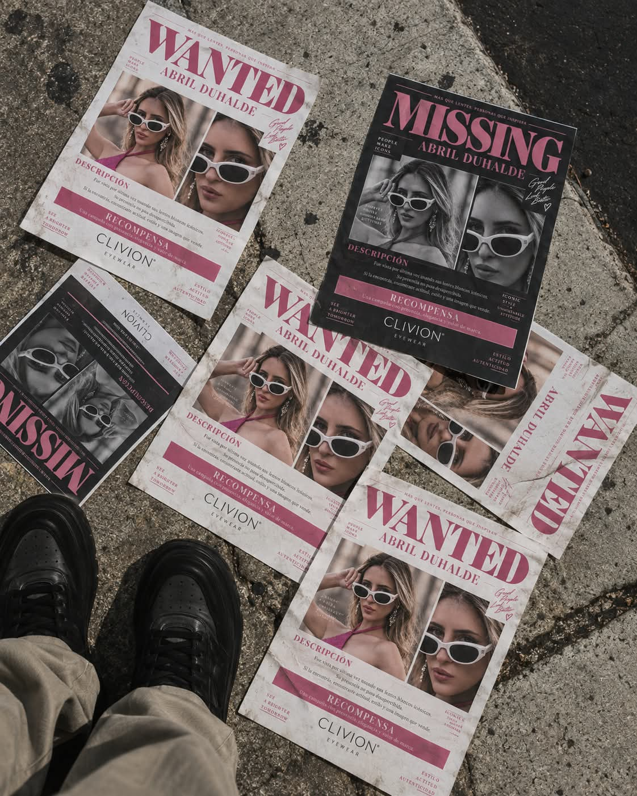
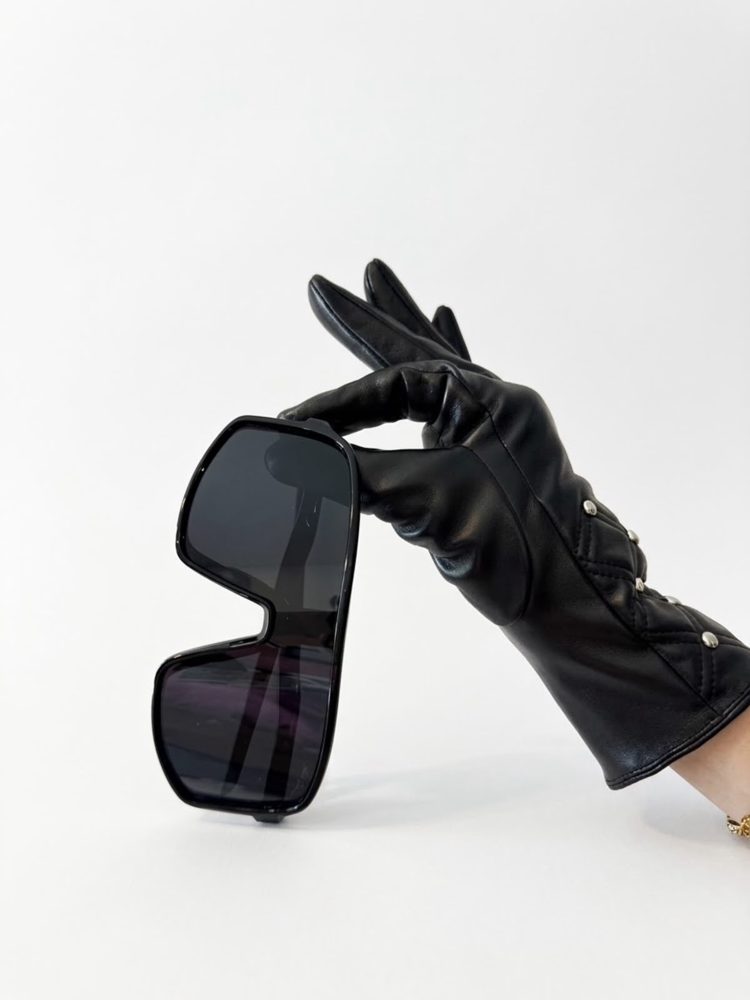

“El secreto
para vender
sin hacer nada.”
FÓRMULA MÁGICAOTRO CURSOMÁS TEORÍA
Terminás con más videos guardados.
Tu negocio sigue en el mismo lugar.
¿Otro curso que solo te enseña a vender el mismo curso? Construí algo tuyo: aprendé a crecer y sostener tus redes, con una landing lista para vender y material gráfico profesional.
Que lo próximo
sea tu marca.
No cuestionamos aprender. Cuestionamos pagar por una promesa y quedarte sola con la ejecución.
Terminás con más videos guardados.
Tu negocio sigue en el mismo lugar.
Un video te lleva a otro. Un curso, a otro curso. Y vos seguís sin saber cómo hacer crecer tu marca, sostener tus redes y vender lo que realmente ofrecés.
Ejemplos de la gente: comentarios sobre promesas de marketing.Capturas de Instagram · identidad protegida
Tu historia, tu público y lo que querés lograr. Ese es el punto de partida para construir toda la identidad de tu marca.
Abril te acompaña a aprender a usar tus redes, crear contenido y trabajar en el crecimiento de tu cuenta. Más de 10 años de experiencia puestos al servicio de tu proyecto.
Identidad y piezas gráficas que hablen el mismo idioma. Material concreto para presentar tu propuesta con una imagen profesional.
Iara diseña la landing y el material para tu objetivo. Probar muebles con medidas. Recorrer arquitectura en 360. Una experiencia que tenga sentido para tu negocio.
Recorré las landings ↗Construimos un universo alrededor de lo que vendés.
Cuatro propuestas originales.
Entrá, recorré y pensá la tuya.Demos de diseño, sin compras ni reservas activas.
Tu identidad, tus piezas gráficas y tu landing hablan el mismo idioma. Aprendés cómo darle continuidad.

De Nueva York a Marrakech. Imagen, producto y movimiento conectados por una misma dirección creativa.
Una campaña puede vivir en una escena, en un detalle o en una mirada.
Recorré todas las piezas ↓


Una comunidad, una web, un universo visual. Estas son algunas de las piezas que respaldan nuestra experiencia.
El objetivo: que una persona pueda imaginarse dentro del proyecto. Iara creó una experiencia con un recorrido 360 para explorar los espacios, además de la identidad visual y la web.
Explorá Altiora ↗Para elegir muebles, una foto no alcanza. Iara pensó una demo para probar módulos y colores en un ambiente, con sus medidas. Una herramienta que ayuda a decidir y convierte la web en parte de la experiencia.
Probá el configurador ↗La misma oferta. Dos maneras de presentarla.Comparación conceptual, no un antes y después de un cliente.
Vendemos productos de excelente calidad.
Consultanos por mensaje.
Muchos estilos. Mensaje difuso.
Todo depende de explicar por chat.
Identidad reconocible. Una propuesta clara.
Del contenido a una acción concreta.
El alcance se define según tu punto de partida y tus objetivos. Con entregables claros desde el inicio.
Para conectar tu posicionamiento, tus redes y el recorrido de venta. Con implementación y acompañamiento.
Las suscripciones externas, comisiones de pago e inversión publicitaria se abonan aparte. La gestión mensual de redes se acuerda por separado.
Quiero todo conectado ↗El curso acompaña al sistema. No lo reemplaza.Valores orientativos de la propuesta base. Se ajustan según personalización, secciones, contenidos e integraciones. Definimos alcance e inversión antes de comenzar; no prometemos ventas ni una cantidad de seguidores.
Conocemos tu historia, tu público y el objetivo de tu negocio. De ahí nace una idea propia para tu proyecto.
Definimos concepto, voz, universo visual y material gráfico. Cada pieza parte de la misma idea.
Con más de 10 años de experiencia, Abril te acompaña en el proceso: usar tus redes, crear contenido con intención y trabajar para hacer crecer tu cuenta.
Una landing y material pensados para lo que necesitás lograr. Como probar muebles con sus medidas en La Estantería o explorar un recorrido 360 en Altiora.
Unimos diseño, tecnología, imagen y comunicación. Miramos tu marca como un todo: desde cómo se presenta hasta qué pasa cuando alguien quiere comprarte.
Respondé seis preguntas y descubrí qué conviene priorizar: tu presencia, tu recorrido comercial o la conexión entre ambos.
Orientativo · sin registro · respuestas privadas en esta páginaCompletá el diagnóstico para ver tu resultado.
No necesariamente. Primero revisamos qué ya funciona y qué necesita una mejora. El alcance puede partir de tu identidad actual.
La propuesta START Integral conecta landing, marca, contenido y formación. Si necesitás otro alcance, escribinos y revisamos tu proyecto.
Según la identidad, las páginas, los contenidos y las integraciones que requiera el proyecto. El alcance y las herramientas se detallan en una propuesta antes de comenzar.
Trabajamos para mejorar la claridad, la experiencia y el recorrido comercial. Las ventas también dependen de tu oferta, el tráfico y tu operación; no prometemos una cifra sin evidencia.
Marca. Redes. Estrategia. Landing.
Dejá de imaginarlo como piezas sueltas.